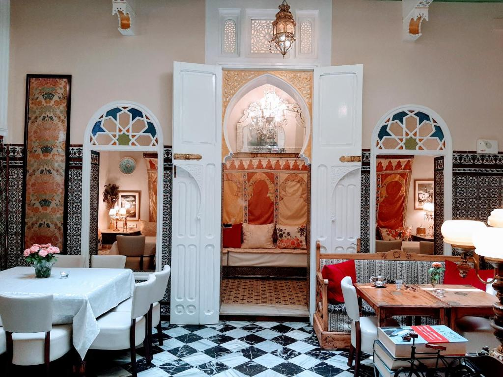
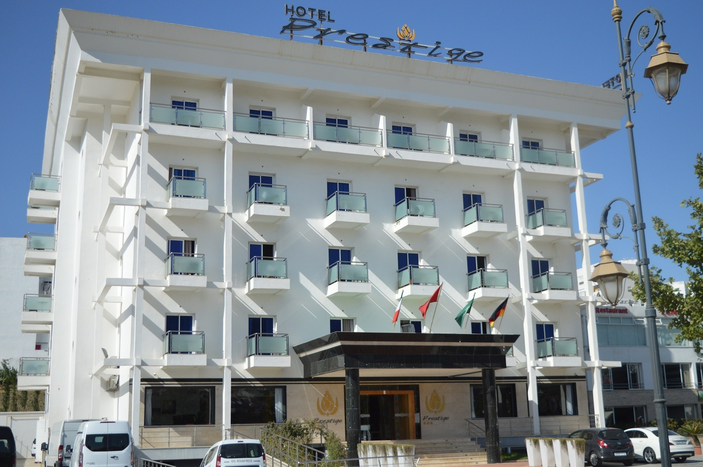
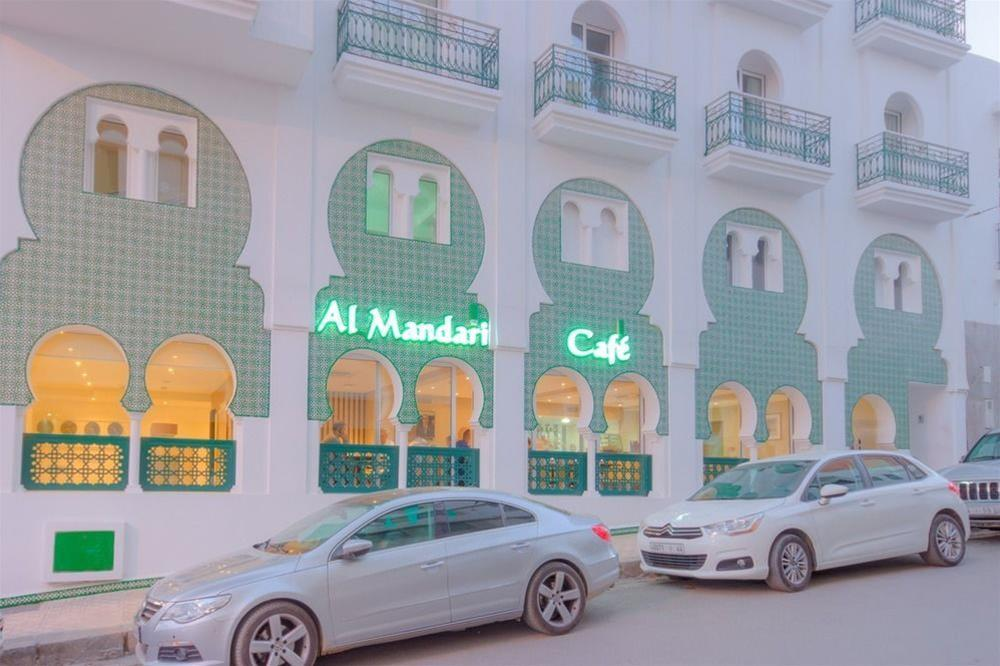

Le lieu de résidence lors du voyage est l'une des préoccupations les plus importantes du visiteur, car certains préfèrent louer un appartement ou un complexe, tandis que d'autres préfèrent séjourner dans un hôtel où ils obtiennent une partie du confort qu'ils recherchent pendant leurs vacances.
L'hôtel Redacto est l'un des meilleurs hôtels de Tétouan, car il dispose d'un ensemble de chambres et de suites au décor exquis qui mélange déco espagnole et marocaine, personnalisées pour tous les goûts. L'hôtel dispose de centres de soins corporels intégrés, d'instituts de beauté et d'un spa, et vous pouvez également essayer des séances de massage dans les lieux de massage équipés de l'hôtel. L'hôtel propose des chambres privées et des lieux pour le tournage de plusieurs films.La chambre présente une décoration espagnole, des détails marocains et une salle de bains privative individuelle.